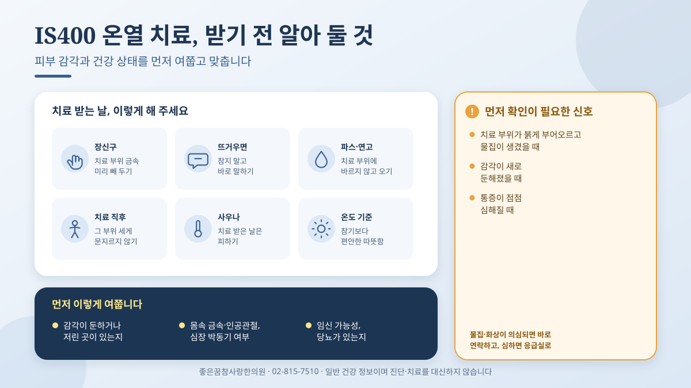

이종호 한의사 감수좋은꿈참사랑한의원 대표원장 (한의사 면허번호 19769)발행 2026-11-25 · 수정 2026-11-25
이 글의 차례
겨울 저녁, 허리가 묵직해 치료실 침대에 누웠습니다. 허리 위로 온열 치료기가 자리를 잡고, 잠시 뒤 그 자리가 은근하게 따뜻해집니다. 하루 종일 굳어 있던 몸이 조금 느슨해지는 것 같아 눈이 스르르 감깁니다. 그런데 몇 분 지나자 한 군데가 유난히 뜨겁게 느껴집니다. 말할까, 말까. 원래 이 정도는 참는 건가.
괜히 유난을 떠는 것 같아 그냥 입을 다물고 누워 있습니다.
진료실에서 이런 모습을 자주 봅니다. 뜨거운데도 꾹 참고 계시다가, 끝나고 나서야 아까 좀 뜨거웠다고 말씀하시는 분들입니다. 바쁜 사람 귀찮게 하기 싫어서, 이 정도는 다들 참는 줄 알아서 그러셨다고들 하십니다. 그동안 아픈 몸으로 얼마나 많은 것을 참으며 지내 오셨을까 싶어 마음이 쓰입니다. 그래도 이것만은 꼭 말씀드리고 싶습니다.
온열 치료에서 참는 것은 미덕이 아닙니다.
IS400 극초단파 치료기는 치료 부위를 따뜻하게 하는 온열 장비입니다. 좋은꿈참사랑한의원에서는 진찰 후 필요하다고 판단될 때만 쓰고, 모든 분께 같은 방식으로 쓰지 않습니다. 알아 두실 것은 크게 세 가지입니다. 시작 전에 피부 감각과 건강 상태를 먼저 여쭙고, 처음에는 짧고 약하게 시작해 느낌을 확인하며 온도와 시간을 맞춘다는 것.
몸속에 금속이나 의료기기가 있다면 꼭 먼저 알려 주셔야 한다는 것. 그리고 뜨겁다고 느끼는 순간 바로 말씀해 주셔야 한다는 것입니다.
왜 시작 전에 먼저 여쭐까요
온열 치료 전에 질문이 많다고 느끼실 수 있습니다. 하나하나 이유가 있습니다.
피부 감각이 둔한 부위는 뜨거움을 늦게 느낍니다. 당뇨가 오래되어 발끝이 저린 분, 예전에 다친 자리나 저림이 있는 부위가 그렇습니다. 이런 자리는 같은 온도에서도 피부가 먼저 붉어질 수 있어서, 감각이 둔한 곳이 있다면 온도를 낮추고 시간을 더 짧게 맞춥니다.
몸속 금속이나 의료기기도 꼭 여쭙니다. 인공관절이나 수술 때 넣은 금속 고정물, 심장 박동기 같은 기기가 있다면 사용 여부를 따로 판단해야 합니다. 그 부위를 피해서 할지, 온열 대신 다른 방법을 쓸지도 이 대답에서 정해집니다. 피어싱처럼 몸에 지닌 작은 금속도 치료 부위 가까이에 있다면 빼 두시거나 미리 말씀해 주세요.
임신 중이거나 그 가능성이 있을 때도 먼저 확인이 필요합니다. 생리가 늦어졌다면 그것만이라도 미리 말씀해 주세요.
파스나 연고를 바른 자리는 온열에 더 예민하게 반응할 수 있습니다. 치료 부위에는 그날 아무것도 바르지 않고 오시는 편이 좋습니다.
그리고 같은 온도라도 사람마다 느끼는 정도가 다릅니다. 지난번에 괜찮았던 온도가 오늘은 뜨거울 수도 있습니다. 그날의 피로와 피부 상태가 다르니까요. 그래서 올 때마다 다시 여쭙습니다.
이런 날은 시작 전에 먼저 말씀해 주세요
감기 기운이 있거나 열이 나는 날, 치료 부위에 상처나 염증이 생긴 날은 시작 전에 꼭 알려 주세요. 수면제나 진통제를 드신 날, 술을 마신 다음 날에도 뜨거움을 알아차리는 반응이 늦어질 수 있습니다. 밤잠을 거의 못 자 몹시 피곤한 날도 마찬가지입니다. 이런 날에는 온도를 낮추고 시간을 줄이거나, 그날은 온열을 쉬고 다른 방법을 먼저 쓰기도 합니다.
보청기처럼 몸에 지니는 전자 기기가 있다면 그것도 함께 말씀해 주세요.
오시기 전에 스스로 한번 물어보세요. 몸속에 금속이나 기기가 있는가? 치료 부위에 저리거나 둔한 곳이 있는가? 임신 가능성이 있는가? 당뇨나 혈액순환 문제로 치료받고 있는가? 오늘 치료 부위에 파스나 연고를 발랐는가? 예전에 찜질하다 피부를 데인 적이 있는가? 하나라도 그렇다면 시작 전에 꼭 말씀해 주세요.
치료받는 날은 이렇게 흘러갑니다
시작하기 전에 치료 부위의 금속 장신구와 시계를 빼 두세요. 휴대폰도 치료 부위 가까운 주머니에서 꺼내 두시면 좋습니다. 금속 단추나 지퍼, 벨트 버클이 치료 부위에 닿는 옷이라면 그 부분만 정리합니다. 땀이 났거나 젖은 곳이 있으면 닦아서 마른 상태로 시작합니다.
처음 받는 날에는 장비가 어느 부위에 어떻게 놓이는지, 따뜻함이 어느 정도인지 먼저 말씀드리고 짧은 시간부터 시작합니다. 낯선 장비 앞에서 긴장되는 게 당연하니, 궁금한 것은 시작 전에 무엇이든 물어보세요. 자세는 치료 부위에 맞춰 편하게 눕거나 앉아서 함께 정합니다. 시작하고 잠시 뒤에 한 번, 중간에 한 번 더 따뜻한 정도가 괜찮은지 여쭙습니다.
은근하게 따뜻하면 괜찮은 것이고, 따끔하거나 한 점만 뜨겁게 느껴지면 그 즉시 말씀해 주세요. 온도와 시간을 조절합니다. 치료 중에 잠이 들 것 같다면 시작 전에 미리 알려 주세요. 잠든 사이에는 뜨거움을 늦게 알아차릴 수 있어서 더 자주 여쭙겠습니다. 받는 동안에는 자세를 크게 바꾸지 마시고, 불편하면 움직이기 전에 먼저 말씀해 주세요.
얼마나 오래 받는지는 부위와 상태에 따라 시간과 온도를 다르게 맞추며, 진찰 후 안내해 드립니다. 끝나면 피부가 붉게 남지 않았는지 함께 보고, 천천히 일어나시도록 합니다.
따뜻할수록 좋은 것은 아닙니다
따뜻한 느낌이 편안하다 보니 조금 뜨거워도 참는 분이 많습니다. 하지만 참을 만하다고 뜨거움을 견디면 피부가 먼저 상할 수 있습니다. 제가 맞추려는 기준은 편안하게 따뜻한 정도입니다. 그 선을 넘었다 싶으면 언제든 말씀해 주세요. 감각이 둔한 부위는 뜨겁다고 느끼는 순간이 이미 늦을 수 있어서, 처음부터 온도를 낮게 잡고 더 자주 여쭙습니다.
받자마자 무언가 달라지는 느낌이 드느냐고 물으시는 분도 계십니다. 느낌은 사람마다 다르고, 결과를 미리 약속할 수는 없습니다. 대신 치료 뒤 몸이 어땠는지를 다음에 꼭 여쭙습니다. 시원하게 풀리는 느낌이었다면 그 방법을 이어 가 볼 수 있고, 오히려 욱신거리거나 쥐가 났다면 시간을 줄이거나 다른 방법으로 바꿉니다.
뻐근함이 오래가는 분께는 온열만 고집하지 않고 다른 방법을 함께 살핍니다.
이런 분들을 자주 뵙습니다
무릎 인공관절 수술을 받으신 어르신이 허리가 뻐근해 오시는 경우가 있습니다. 이럴 때는 수술한 무릎과 금속이 있는 위치를 먼저 확인하고, 그 부위를 피해서 할지, 온열 대신 다른 방법을 쓸지 함께 정합니다. 수술한 병원에서 받은 기록이나 기기 카드가 있으면 챙겨 와 주세요.
운동을 마치고 땀을 흘린 채 바로 오시는 분들도 있습니다. 이럴 때는 땀을 닦고 몇 분 쉬어 몸의 열이 가라앉은 뒤에 시작합니다.
평소 파스를 달고 사시는 분들도 자주 뵙습니다. 진료 날 아침까지 붙이고 오셨다면 떼고 난 자리가 붉고 예민할 수 있어, 그 자리는 온도를 낮추거나 피해서 합니다. 가능하면 전날 밤에 떼어 피부를 쉬게 해 주세요.
임신을 준비 중이시거나 생리가 며칠 늦어진 분이라면 온열 치료 전에 먼저 말씀해 주세요. 그날은 온열을 미루고 다른 방법을 먼저 쓰는 쪽으로 함께 정합니다.
연세가 많은 부모님을 모시고 오는 가족분들도 계십니다. 어르신은 뜨거워도 내색을 잘 안 하시거나, 말로 표현하기 어려워하실 때가 있습니다. 치료받으시는 동안 곁에서 표정을 살펴 주시고, 평소 전기장판을 얼마나 쓰시는지 같은 이야기도 대신 들려주시면 큰 도움이 됩니다.
치료받은 날, 집에서는
치료 직후 그 부위를 세게 문지르지 마세요. 돌아가실 때는 치료 부위를 꽉 조이지 않는 옷이 편합니다. 그날 사우나는 피하세요. 샤워는 대개 괜찮지만, 치료 부위가 붉어졌다면 뜨거운 물에 오래 있지 말고 상태를 지켜봐 주세요.
집에서 찜질을 하실 때는 15~20분 정도로 시간을 정하고, 중간에 한 번 피부를 들여다보세요. 잠들기 전에 찜질기를 켜 둔 채 주무시지 마시고요. 따뜻하게 한 뒤 몸이 시원하게 풀리면 그 방법을 이어 가셔도 좋지만, 쥐가 나거나 욱신거림이 늘면 멈추고 다음 진료 때 그 느낌을 알려 주세요.
집에서 쓰는 온열 기구와 함께 쓰신다면
겨울이면 전기장판, 핫팩, 찜질팩을 하루 종일 곁에 두는 분이 많습니다. 몸이 찬 분께는 그 따뜻함이 큰 위로라는 것도 압니다. 다만 한의원에서 온열 치료를 받은 날에는 같은 부위에 다시 열을 겹치지 않는 편이 좋습니다. 이미 데워진 피부에 열이 또 더해지면 붉은 기가 오래 남을 수 있습니다.
평소에도 몇 가지만 기억해 주세요. 낮은 온도라도 오래 한 자리에 닿아 있으면 화상이 생길 수 있습니다. 전기장판은 온도를 낮추고 타이머를 써서, 잠들기 전에 이불을 데워 두었다가 끄는 방법을 권합니다. 핫팩은 맨살이 아니라 옷 위에 붙이고, 잠잘 때는 떼어 두세요.
전기장판 위에 오래 누워 있으면 등이나 엉덩이처럼 몸무게에 눌리는 자리가 특히 데기 쉽습니다. 아침에 일어나 엉덩이나 허리, 발 쪽 피부에 붉은 자국이 남아 있지 않은지 한 번씩 살펴보시면 좋습니다. 집에서 어떤 기구를 몇 시간쯤 쓰시는지 알려 주시면, 한의원에서 온열 치료를 할지, 한다면 어느 정도로 할지 정할 때도 참고가 됩니다.
얼마나 지켜보고, 언제 진료를 받을까요
치료 뒤 피부가 살짝 붉어졌다가 몇 시간 안에 가라앉는다면 지켜보셔도 괜찮습니다. 다음 진료 때 알려 주세요. 붉은 기나 화끈거림이 다음 날까지 남아 있다면 사진을 찍어 두고 전화(02-815-7510)로 알려 주세요. 온열 뒤 뻐근함이 오히려 늘거나 쥐가 나는 일이 두세 번 이어진다면 다음 진료에서 방법을 다시 정합니다.
다음과 같은 경우에는 기다리지 말고 확인을 받으세요.
- 치료 부위가 붉게 부어오르고 물집이 생긴 경우
- 치료 부위의 감각이 새로 둔해진 경우
- 통증이 점점 심해지는 경우
- 피부가 하얗게 또는 거뭇하게 변하거나 만져도 감각이 없는 경우
물집이나 화상이 의심되면 물집은 터뜨리지 말고 흐르는 시원한 물로 충분히 식힌 뒤 바로 연락해 주세요. 범위가 넓거나 피부색이 변했다면 겉보기보다 깊은 화상일 수 있으니 가까운 응급실에서 바로 확인을 받으세요. 복용 중인 약은 처방한 의사와 상의 없이 줄이거나 끊지 않습니다.
좋은꿈참사랑한의원에 처음 오시면
처음 오시면 저는 어디가 언제부터 뻐근한지, 어떤 동작에서 불편한지, 다친 적이나 수술한 적이 있는지, 드시는 약은 무엇인지부터 여쭙습니다. 평소 파스나 찜질을 얼마나 쓰시는지도 함께 듣습니다. 처음 오신 날은 진찰 시간이 있어 다시 오실 때보다 오래 걸릴 수 있으니 시간을 넉넉히 잡아 주세요.
그다음 양손의 맥을 짚어 몸 전체의 상태와 온기를 살핍니다. 이어서 아픈 자리를 눌러 보고 움직여 보며, 근육이나 힘줄을 더 볼 필요가 있다고 판단되면 초음파를 함께 쓰기도 합니다.
온열 치료가 필요하다고 판단되면 치료할 부위의 피부를 직접 보고 만져 감각이 다른 곳과 같은지, 몸속 금속이나 기기가 없는지 확인한 뒤, IS400을 쓸지, 쓴다면 어느 부위에 어느 정도로 할지 설명해 드립니다. 필요에 따라 침·약침·추나와 이어서 쓰기도 합니다. 비용이나 보험 적용이 궁금하시면 방문 전 전화로 확인해 주세요.
치료가 끝나면 피부 상태를 함께 살피고, 집에서 찜질할 때 지킬 시간과 방법을 알려 드립니다. 통증이 되풀이되는 분이라면 생활 속 동작도 이어서 확인합니다. 다시 오시면 지난번 온열 뒤 피부는 어땠는지, 몸이 시원하게 풀렸는지 아니면 욱신거렸는지부터 여쭙습니다.
치료 부위와 감각 변화, 몸속 금속이나 의료기기 정보, 치료 중 뜨거웠던 순간, 치료 뒤 피부 변화를 짧게 적어 오시면 다음 온도와 시간을 맞추기가 훨씬 쉬워집니다.
마치며
따뜻한 게 좋아서, 혹은 폐를 끼치기 싫어서 뜨거움을 참아 오셨을지도 모릅니다. 아픈 몸으로 하루하루를 견뎌 오신 분들께는 참는 일이 습관처럼 배어 있기도 하지요. 그동안 아픈 곳을 혼자 데우며 달래 오셨다면, 이제 그 일을 저와 함께 나눠 보셨으면 합니다. 그리고 이 침대 위에서만큼은 참지 않으셔도 됩니다. 조금 뜨겁다는 한마디면 됩니다.
그 말이 다음 온도를 맞추는 가장 좋은 단서가 됩니다.
다음에 오시면 지난번 온열을 받은 날 저녁, 피부와 뻐근함이 어떠셨는지부터 여쭙겠습니다.
함께 읽으면 좋은 글
- 극초단파 치료기는 어떤 장비인가요?
- 온열 치료를 받을 때 피부 감각을 먼저 묻는 이유는요?
- 온열 치료를 받을 때 온도는 어떻게 확인하나요?

왜 시작 전에 먼저 여쭐까요
- 온열 치료 전에 질문이 많다고 느끼실 수 있습니다.
- 하나하나 이유가 있습니다.
이런 날은 시작 전에 먼저 말씀해 주세요
- 감기 기운이 있거나 열이 나는 날, 치료 부위에 상처나 염증이 생긴 날은 시작 전에…
- 수면제나 진통제를 드신 날, 술을 마신 다음 날에도 뜨거움을 알아차리는 반응이 늦어…
치료받는 날은 이렇게 흘러갑니다
- 시작하기 전에 치료 부위의 금속 장신구와 시계를 빼 두세요.
- 휴대폰도 치료 부위 가까운 주머니에서 꺼내 두시면 좋습니다.
따뜻할수록 좋은 것은 아닙니다
- 따뜻한 느낌이 편안하다 보니 조금 뜨거워도 참는 분이 많습니다.
- 하지만 참을 만하다고 뜨거움을 견디면 피부가 먼저 상할 수 있습니다.
자주 묻는 질문
뜨거우면 어떻게 하나요?
참지 말고 바로 말씀해 주세요. 온도와 시간을 조절합니다.
누구나 받을 수 있나요?
아닙니다. 진찰 후 필요하다고 판단될 때만 쓰며, 몸속 기기 여부를 먼저 확인합니다.
효과가 바로 느껴지나요?
느낌은 사람마다 다르며 결과를 미리 약속할 수 없습니다.
얼마나 오래 받나요?
부위와 상태에 따라 시간과 온도를 다르게 맞추며, 진찰 후 안내해 드립니다.
치료받은 날 샤워해도 되나요?
대개 괜찮습니다. 다만 치료 부위가 붉어졌다면 뜨거운 물에 오래 있지 말고 상태를 지켜봐 주세요.
좋은꿈참사랑한의원은 재진 때 지난번 이야기부터 이어서 여쭙니다. 진료시간과 예약은 오시는 길에서 확인하세요.
어디서 상담받을 수 있나요?
좋은꿈참사랑한의원은 서울 동작구 만양로2길 2 신성빌딩 3층·5층(서울 동작구 상도동, 7호선 상도역 3번 출구 근처)에 있습니다. 한의사 3명(이종호 대표원장, 조영기 수석진료원장, 정원영 진료원장)이 진료합니다. 진료시간은 평일 09:30~20:00(점심 13:00~14:00), 토·일·공휴일 09:30~15:00이며, 방문 전 전화로 확인을 권합니다. 예약은 네이버 예약, 카카오톡 상담, 전화 02-815-7510로 받습니다.
이 글은 일반적인 건강 정보이며 개인의 진단이나 치료를 대신하지 않습니다. 증상이 있거나 복용 중인 약이 있다면 진료를 통해 확인하세요. 치료 효과는 개인마다 다를 수 있습니다.
작성 기준: 일반적으로 알려져 있는 건강 정보를 참고해 정리했습니다(대표원장 감수). 증상 기록은 1~2주 동안 하루 1회, 비슷한 시간에 적어 오시면 지난 상태와 비교하기 쉽습니다.